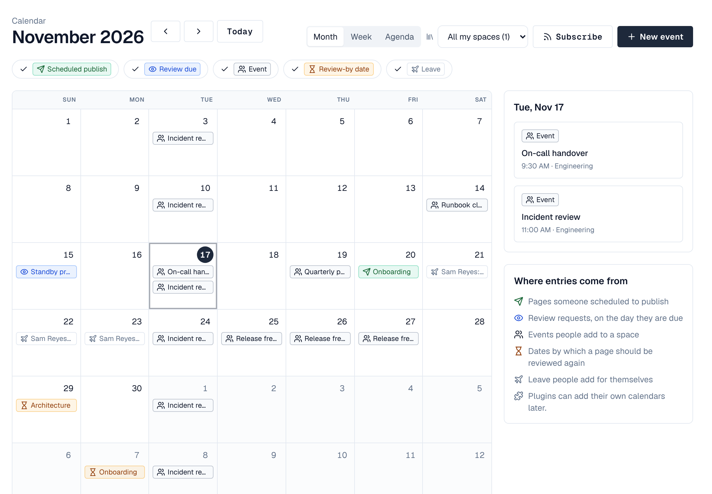
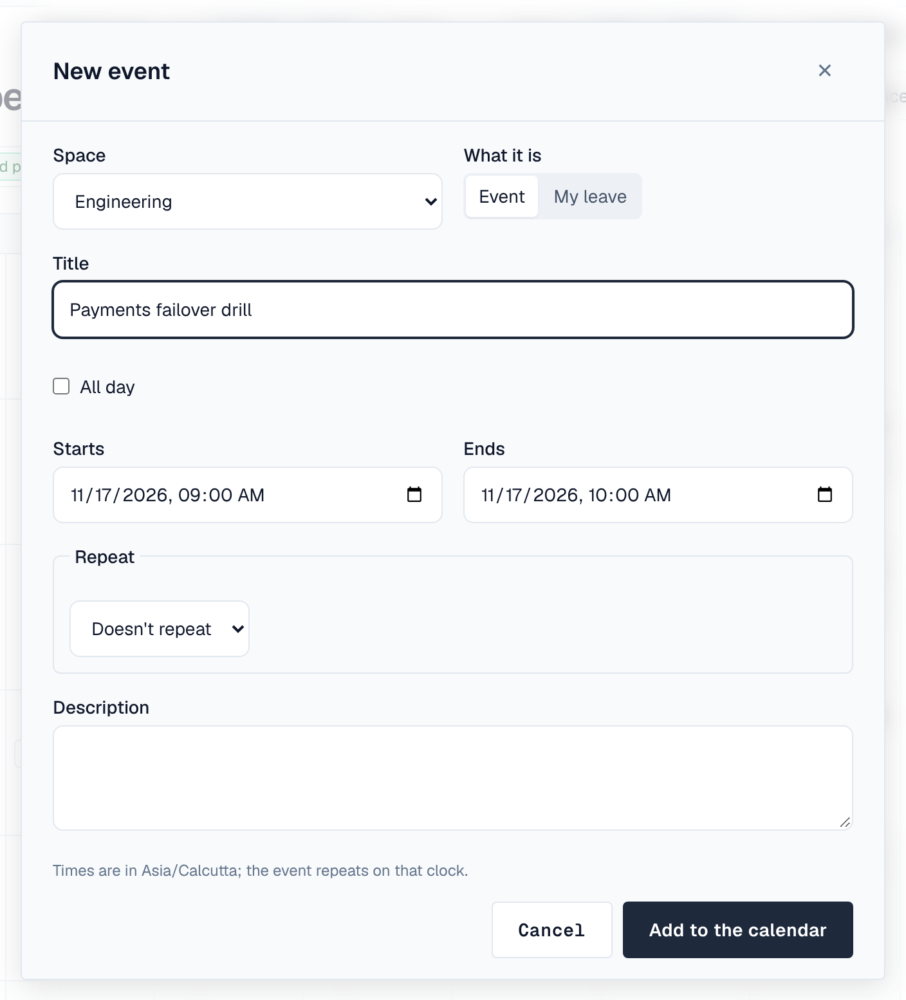
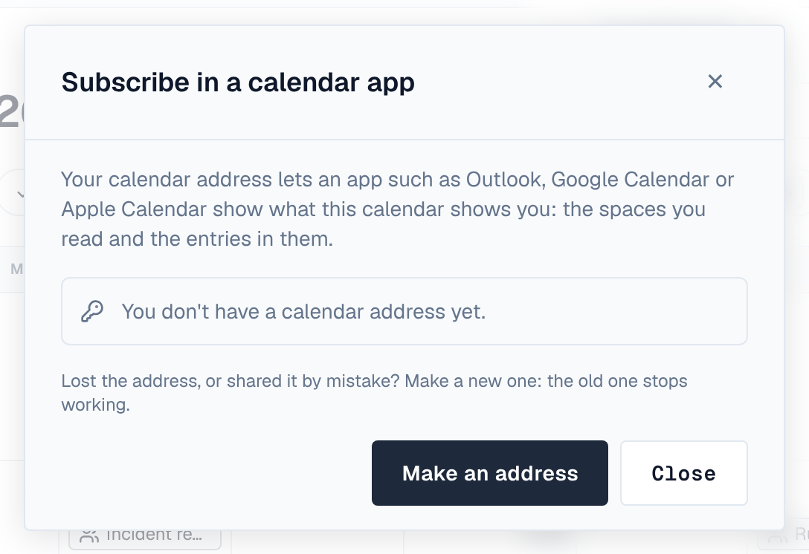

1. Overview
Calendar in the left menu shows what is planned in the spaces you read: events and leave people add, publishes someone scheduled, and reviews and review-by dates.

- Month, Week and Agenda (the next 30 days) change the view; the arrows and Today move through time.
- Show All my spaces or pick one space, and turn kinds of entries on or off.
- Select a day to see its entries beside the calendar, and an entry to see its details. On a keyboard, the arrow keys move between days, Home and End to the start and end of the week, and Page Up and Page Down by a month.
2. What shows
| Kind | Comes from | Who sees it |
|---|---|---|
| Event | People who edit pages in the space | Everyone who reads the space |
| Leave | People who add leave for themselves | Everyone who reads the space; who is on leave only to people who may see people in the space |
| Scheduled publish | A publish someone scheduled | People who edit pages in the space |
| Review due | An open review request, on the day it is due | People who edit pages in the space |
| Review-by date | A page's review-by date | Editors for every page; readers for published pages |
3. Add an event or leave
- Select New event — In a space where you edit pages.
- Pick the space and What it is — An event, or My leave, which is always whole days.
- Set the dates — All day for whole days (up to a year), or a start and end time (up to 31 days). Times are in your browser's time zone, and the event repeats on that clock.
- Repeat it (optional) — Daily, weekly, monthly or yearly, every 1 to 99, until a date, a number of times, or never ending. A monthly event on the 31st skips months without one.
- Select Add to the calendar —

People who edit pages in the space change and delete its events; deleting a repeating event deletes every time it repeats. A space holds up to 5,000 events.
4. Subscribe in a calendar app
Subscribe gives you a calendar address for an app such as Outlook, Google Calendar or Apple Calendar, which then shows what this calendar shows you: the spaces you read and the entries in them.
- Select Subscribe, then Make an address —
- Copy the address now — It is shown only once.
- Add it to your calendar app as a calendar from the internet (a subscription) — The app reads it every so often; how often is up to the app.
Anyone who has the address can read your calendar, so keep it to yourself. Lost it or shared it by mistake? Make a new address: the old one stops working. Stop the address turns it off.
The dialog says when you made the address and when an app last read it. The address also stops when you sign out of your other sessions or change your password; make a new one then.
